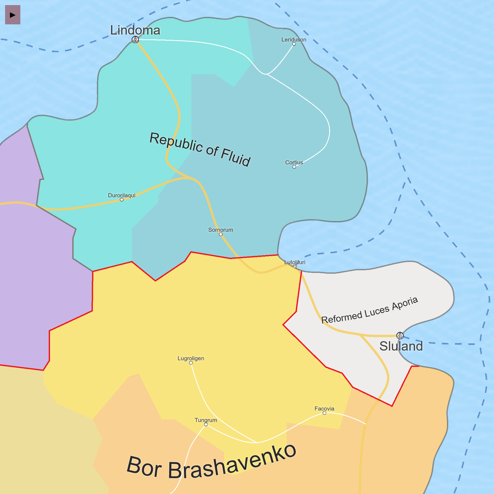

Reformed Luces Aporia and Republic of Fluid are ideologically similar and share a maritime corridor where ships can travel freely due to open borders.
Bor Brashavenko is a kingdom based on authority and religious dominance, and occasionally trades with all of its neighbors to advance its national interests.
The nation in purple whose name is not mentioned on the map is The Allied States of Iosmein, a recent democratic socialist republic inspired from the Aporean model.
The borders in red are closed land borders where people can't pass without a passport and/or visa, and the ones in gray are open borders that anyone can pass through.
The orange, wide roads represent motorways while the white, thin roads represent highways. Only major cities and roads are shown.